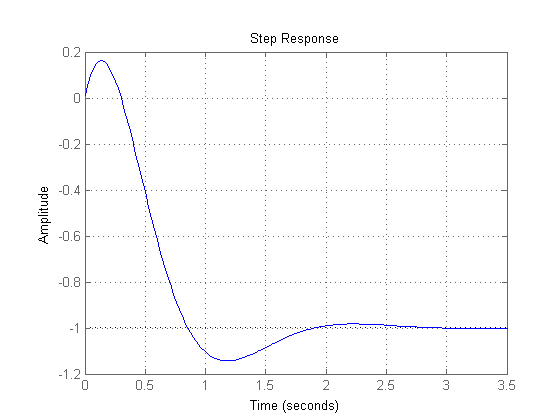
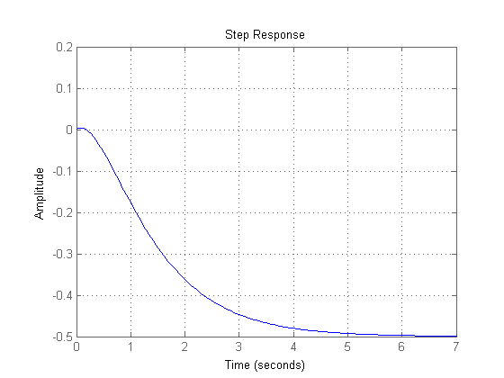

sobre
- Autor: Jonas Vieira de Souza
- Data: 11/09/2018
- Objetivo: Comparar respostas ao degrau
Contents
configurações iniciais
...
close all; clear; clc; s = tf('s');
Gnm1(s)
...
figure;
num = (2.6*s - 13);
den = (s^2 + 4*s + 13);
step(num/den);
grid on;

Gnm2(s)
...
figure;
num = (0.1*s - 1);
den = (s^2 + 3*s + 2);
step(num/den);
grid on;
